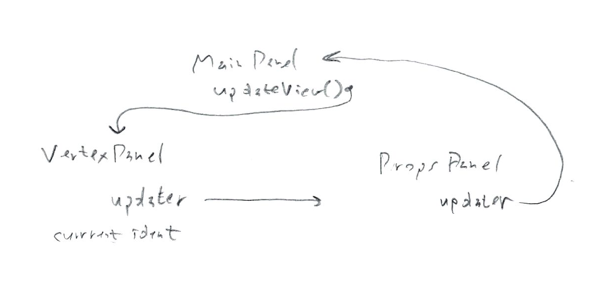

User actions
initial open schema
- exception: if schema is invalid display error and abort
- populate type dropdown (will remain static throughout operation) (in same order as schema file)
- exception: if there are no entites defined in the schema warn user?
- select first item in type dropdown
- populate list with lastest entities (of current type in dropdown)
- if the list is not empty
- select first item
- (causing a read of that entity into right-hand panel)
- else
- end if
select different type from dropdown
- (the newly selected type is displayed in dropdown)
- populate list with lastest entities (of newly selected type in dropdown)
- if the resulting list is not empty
- select first item in the list
- (causing a read of that entity into right-hand panel)
- else
- end if
select entity from list
- read selected entity into right-hand panel
New
- (only available if a NODE is currently selected in the type dropdown, not a RELATIONSHIP)
- create new untitled node and save it to database
- (type dropdown is correctly set already)
- populate entity list around new entity and select it (causing re-read entity into right-hand panel)
Save
- update entity in database (affect changed properties only)
- (type dropdown is correctly set already)
- populate entity list around new entity and select it (causing re-read entity into right-hand panel)
Delete
- display warning dialog and allow user to cancel, otherwise...
- delete entity from database
- (type dropdown is correctly set already)
- populate entity list around former entity
- if the resulting list is not empty
- select item modified just after the deleted item (or if that's too hard, just select the first item in the list)
- (causing a read of that entity into right-hand panel)
- else
- end if
select link from links area
- select target type in dropdown
- populate entity list around selected relationship
- select it
- (causing re-read entity into right-hand panel)
Add link
- display "choose entity" popup for user to select the other end of the relationship
- create new relationship in database
- re-read current entity into right-hand panel
Notes
- 